Katarina
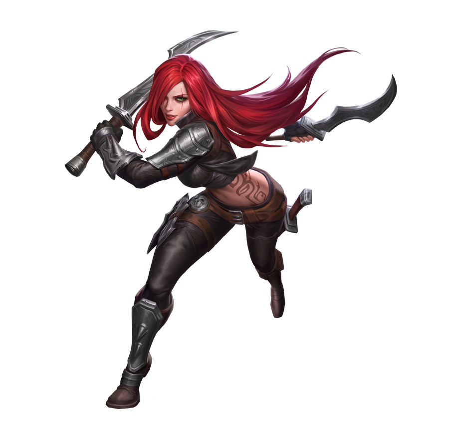Mesmo que tudo esteja difícil, desistir é o pior caminho, lute, insista naquilo que deseja, pois se você ficar apenas no chão, ira demonstrar fraqueza aos teus inimigos, com força e dedicação, conseguirás alcançar teus objetivos
Skins

Katarina Skin Padrão 520 RP
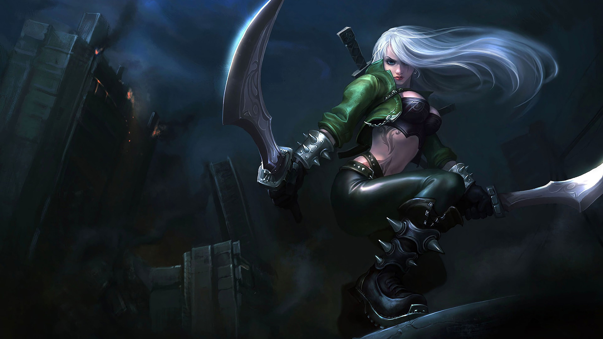Katarina Skin Mercenária 975 RP

Katarina Skin Árbitra 975 RP

Katarina Águas de Sentina 975 RP

Katarina Gatinha 750 RP
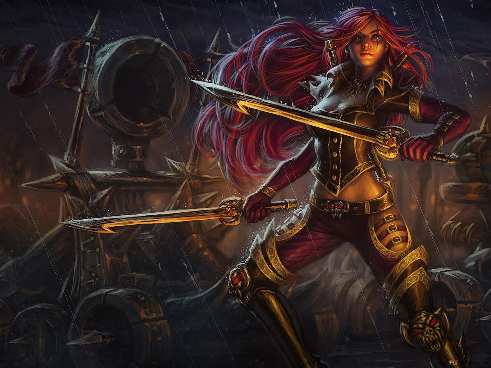Katarina Comandante 750 RP
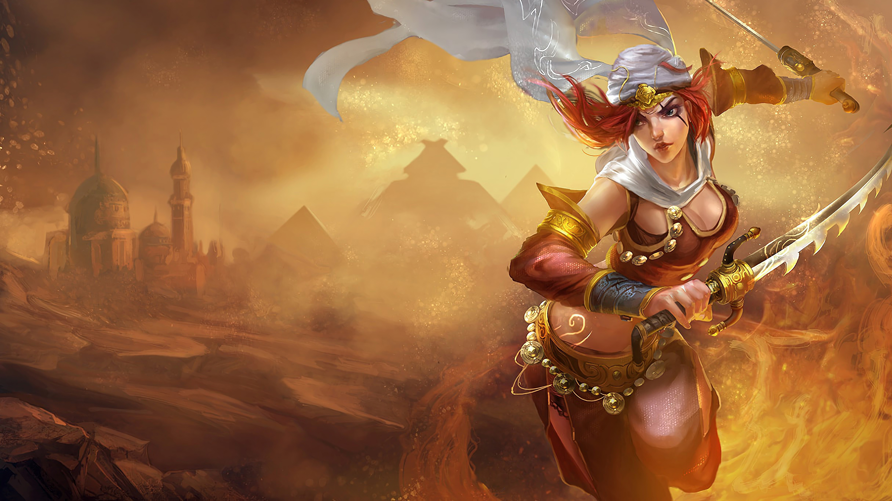Katarina Tempestade de Areia 975 RP
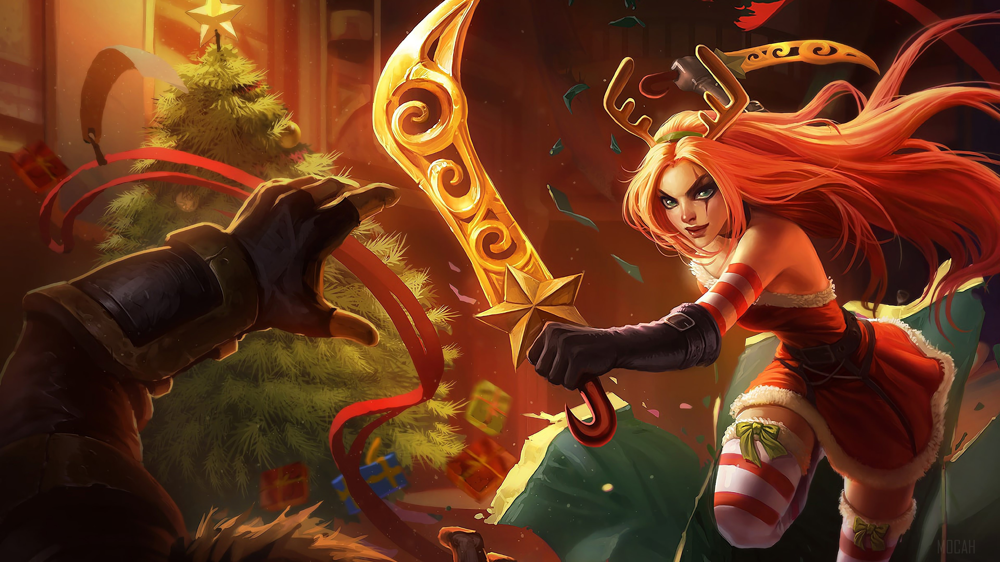Katarina Noite Infeliz 975 RP

Katarina Reinos Combatentes 975 RP

Projeto: Katarina 1350 RP

Katarina Jurada de Morte 1350 RP

Katarina Academia de Batalha 1350 RP
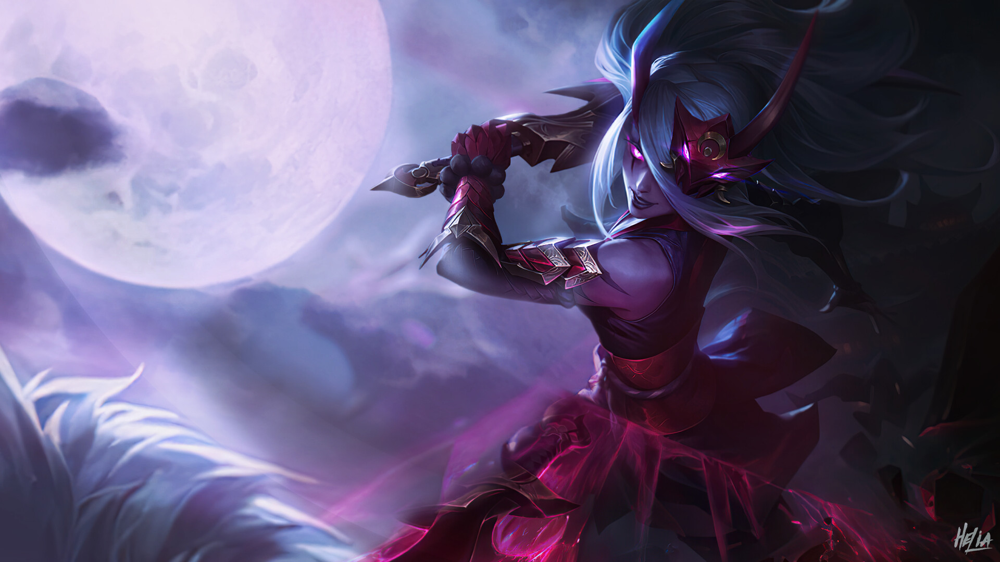Katarina Lua Sangrenta 1350 RP

Katarina Rainha de Batalha 1820 RP
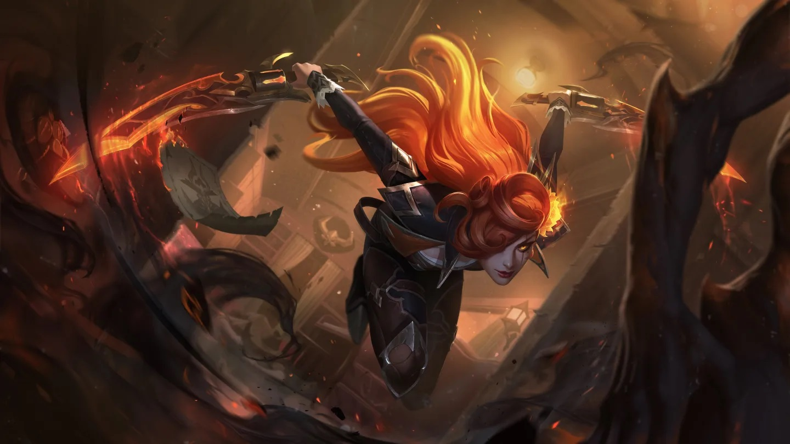Katarina Velho Oeste 1350 RP

Katarina Corte das Fadas 1350 Rp

Katarina Corte das Fadas Presgtígio
Historia
KATARINA
A LÂMINA SINISTRA
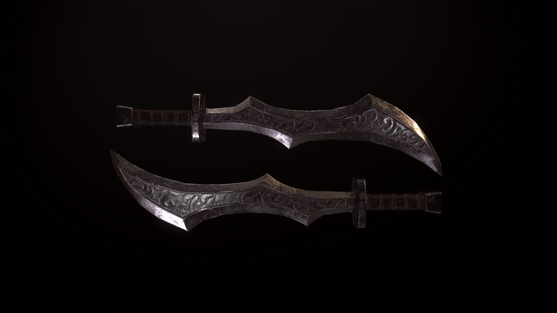Nascida em uma das famílias nobres mais respeitadas de Noxus, Katarina Du Couteau já se encontrava em uma posição elevada acima de qualquer um ainda na tenra idade. Enquanto sua irmã mais nova, Cassiopeia, puxou o lado politicamente brilhante de sua mãe, Katarina era em tudo a cara do pai. Foi seu pai, o astuto General Du Couteau, quem a incentivou a aprender o caminho da lâmina e a cortar seu caminho através dos inimigos do império não com brutalidade descontrolada, mas com precisão mortal. Ele era um professor severo com muitos pupilos e notoriamente difícil de impressionar.
Dessa forma, a infância de Katarina, que foi praticamente inexistente, teve pouco espaço para carinho ou descanso. Ela passou cada minuto aprimorando a si mesma para se tornar a arma suprema, testando sua resistência, sua destreza e sua tolerância à dor. Ela roubou venenos dos boticários menos respeitáveis da cidade, testando sua eficácia em minúsculos incrementos nela mesma, aumentando sua resistência gradualmente enquanto ela catalogava seus efeitos. Ela escalou as torres mais altas na calada da noite, invisível a todos.
E ansiava cada vez mais em fazer sua parte por Noxus e pela oportunidade de demonstrar suas forças escondidas a serviço do império e do trono.
Seu primeiro alvo foi a mando direto de seu pai, enquanto estava acampado com suas tropas na véspera de uma das inumeráveis invasões no oeste… Ela devia assassinar um oficial no exército inimigo, um ninguém de família pobre chamado Demetrius.
Katarina ficou furiosa. Ela não havia treinado por toda sua vida para ter seus talentos desperdiçados em um qualquer que mal conseguia usar uma espada! Ele não estava a sua altura. Em vez de seguir suas ordens, Katarina se esgueirou pelo acampamento inimigo e cortou a garganta do comandante inimigo enquanto ele dormia. Foi uma execução perfeita. Ela traria uma vitória fácil, e glória para Noxus. E certamente deixaria seu pai orgulhoso.
Mas, ao amanhecer, com seu rosto borrado por cinzas, Demetrius, o herói vingador, liderou um ataque enlouquecido pelo acampamento de seu pai. Dúzias de soldados noxianos foram massacrados, junto da comitiva pessoal do general. O próprio pai de Katarina quase não escapou com vida.
Ele estava mais do que furioso, recusando-se a sequer olhar nos olhos de sua filha. Ela o humilhara, assim como o nome de sua família. Os grandes assassinos não buscam reconhecimento ou glória, ele a lembrou. Eles não esperam ocupar um espaço de honra como braço direito de seu mestre.
Derrotada, Katarina enveredou para os ermos, sozinha. Ela completaria a missão a qual deveria ter cumprido. Demetrius pagaria com sua própria vida. Mesmo assim, ela não conseguia parar de se questionar. Será que ela conseguiria se perdoar? Como ela havia sido tão tola?
Por causa do fracasso de Katarina, General Du Couteau havia enviado outro de seus discípulos para executá-la; um pobre-diabo sem nome trazido de uma das guildas de assassinos menores. Mas, mesmo com sangue escorrendo por seu rosto, os anos de treinamento rigoroso tomaram conta de Katarina e suas lâminas estavam em suas mãos em instantes.
Seis horas depois, ela jogou a cabeça cortada de Demetrius aos pés de seu pai.
Ela disse ao General que chegou a pensar em cortar a cabeça dele no lugar, mas que no fim decidiu que ele havia feito a escolha certa em ordenar que a matassem, mesmo que ela odiasse o admitir. Ela falhara. Não só como uma assassina, ou como filha, mas como uma noxiana...
E o fracasso precisa ter consequências. Ela passou os dedos pelo corte profundo no seu olho esquerdo e pensou no preço que outros pagaram por sua arrogância.
Ela sabia que perdera o respeito de seu pai, e jamais o recuperaria. Ele criaria outros para ocupar seu lugar, somente para humilhá-la. Ainda assim, ela jurou se redimir, sem importar o custo, para dedicar seus talentos novamente ao império e se tornar a arma sinistra que ela sempre quis ser..
Habilidades
VORACIDADE
Os Tempos de Recarga de Katarina são reduzidos drasticamente sempre que um Campeão que ela havia causado dano recentemente morrer. Se apanhar uma Adaga, Katarina a usa para cortar todos os inimigos próximos, causando Dano Mágico.
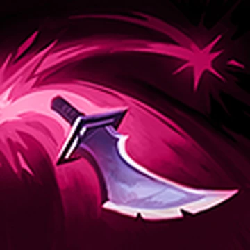 QLÂMINA SALTITANTE
Katarina arremessa uma Adaga no alvo.Ela salta em inimigos próximos antes de ricochetear e cair no chão.
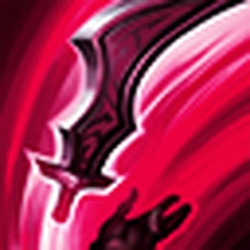 WPREPARAÇÃO
Katarina recebe um impulso de Velocidade de Movimento e joga uma Adaga para cima.
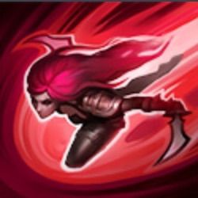 ESHUNPO
Katarina desloca-se em direção ao alvo, golpeando-o caso seja inimigo ou golpeando o inimigo mais próximo caso não seja.
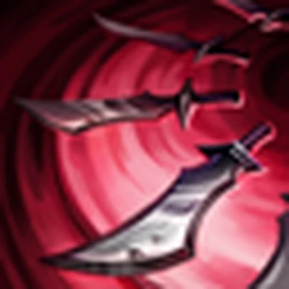 RLÓTUS DA MORTE
Katarina gira em torno de si mesma, disparando adagas muito rapidamente e causando muito Dano Mágico nos 3 Campeões inimigos mais próximos